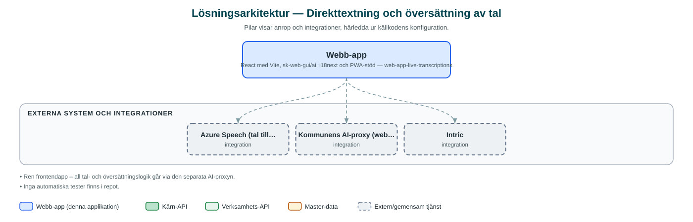

Direkttextning och översättning av tal
Webbapp som i realtid transkriberar det som sägs och visar det som text, med möjlighet att samtidigt översätta till ett annat språk.
Om applikationen
Appen, i gränssnittet kallad Undertextaren, lyssnar på tal via mikrofonen och visar det som text på skärmen i realtid. Användaren väljer talat språk och textat språk – är de olika översätts texten löpande, vilket gör appen användbar vid möten, informationsträffar och andra sammanhang där deltagare behöver textstöd eller ett annat språk.
Textningen kan pausas, återupptas, startas om och skrivas ut, och gränssnittet har ljust och mörkt läge. Appen är byggd som en progressiv webbapp (PWA) och kan därmed installeras på enheten.
Tal- och översättningsfunktionerna bygger på Azures tjänster för taligenkänning och översättning, via kommunens gemensamma AI-proxy.
Det här stödjer applikationen
- Transkribering i realtid – Tal omvandlas löpande till text på skärmen.
- Samtidig översättning – Välj talat och textat språk ur en bred språklista – texten översätts direkt.
- Paus och omstart – Textningen kan pausas, fortsättas och startas om under pågående session.
- Utskrift – Den textade sessionen kan skrivas ut.
- Installerbar app – Byggd som PWA och kan installeras på datorer och mobila enheter.
Teknisk dokumentation
Nedan beskrivs hur applikationen är uppbyggd, vilka API:er den använder och vad som krävs för att driftsätta den. Informationen är härledd ur källkoden och dess konfiguration på GitHub.
Arkitektur

Applikationen är en webbaserad frontend (React med Vite, sk-web-gui/ai, i18next och PWA-stöd). Övriga integrationer som förekommer i koden: Azure Speech (tal till text och översättning), Kommunens AI-proxy (web-app-intric-backend), Intric.
Teknikstack
- Frontend: React med Vite, sk-web-gui/ai, i18next och PWA-stöd
API-beroenden
Inga prenumerationer på kommunens API-plattform hittades i källkodens konfiguration.
Konfiguration och driftsättning
- .env utifrån .env.example
- VITE_API_BASE_URL pekar på instansen av kommunens AI-proxy
- Bas-sökväg, port och tillåtna värdar (VITE_HOSTS)
Noterbart ur källkoden
- Ren frontendapp – all tal- och översättningslogik går via den separata AI-proxyn.
- Inga automatiska tester finns i repot.
Källkod
Källkoden är öppen och finns hos Sundsvalls kommun på GitHub. I källkodsförrådet finns även instruktioner för att klona, konfigurera och starta applikationen i egen miljö.